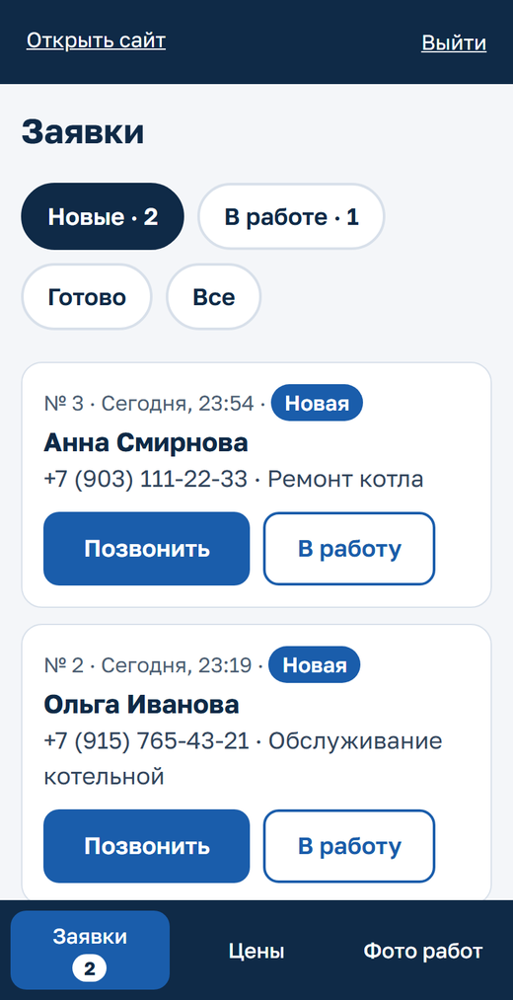
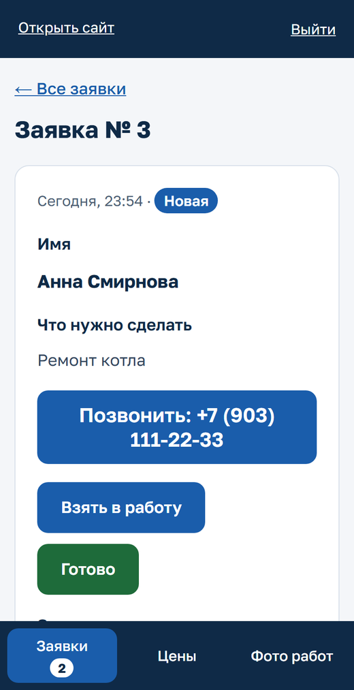
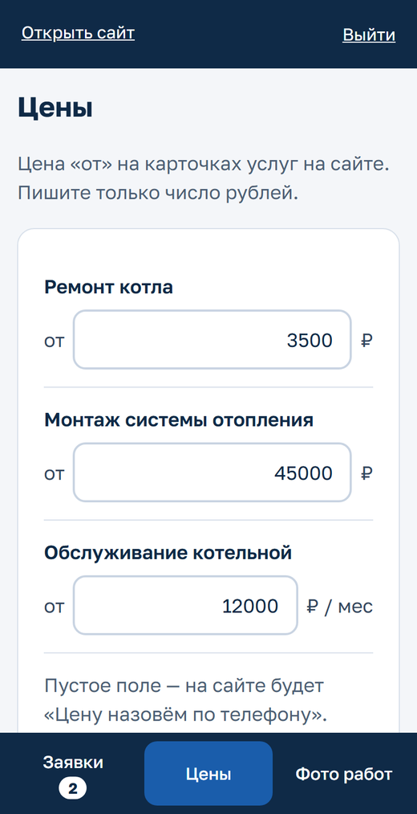
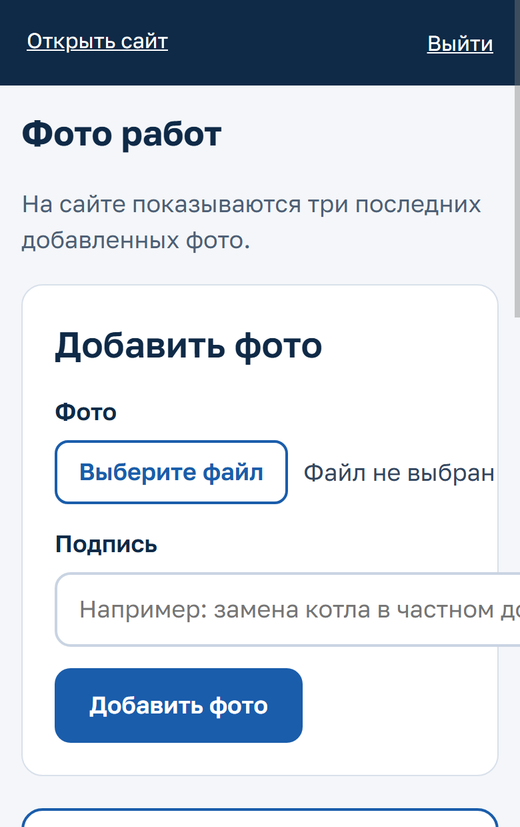

Здесь вы видите заявки с сайта, меняете цены и фото работ. Удобно с
телефона.
[САЙТ]/admin
1. Заявки — каждый день
Когда клиент оставит заявку, в Telegram придёт сообщение: Новая заявка № 15 — Ремонт котла [САЙТ]/admin/leads/15
Нажмите на ссылку. Если попросит — введите логин и пароль.
Нажмите «Позвонить» — телефон сам наберёт номер клиента.
Договорились — нажмите «Взять в работу» (или
«В работу» прямо в списке). Заявка уйдёт из «Новых» во вкладку
«В работе».
Важное (адрес, модель котла, когда перезвонить) запишите в
«Заметку» и нажмите «Сохранить заметку».
Работа сделана — «Готово». Клиент отказался — ссылка
«Отметить как отказ» внизу заявки. Нажали не то —
«Вернуть в новые».
Число на кнопке «Заявки» внизу экрана — сколько новых заявок ещё никто
не взял.

Список заявок

Карточка заявки
2. Цены — когда меняются
Внизу экрана нажмите «Цены».
Впишите цену «от» только числом, без «₽» и точек: 2500.
Нажмите «Сохранить». Появится зелёная надпись «Сохранено» —
цена на сайте уже новая.
Оставили поле пустым — на сайте будет «Цену назовём по телефону».

Цены
3. Фото работ — после хорошего объекта
Внизу экрана нажмите «Фото работ», затем
«Выберите файл» — можно сразу сфотографировать.
Напишите короткую подпись: «Замена котла в частном доме» — и
нажмите «Добавить фото».
На сайте видны три последних фото. Неудачное фото — кнопка
«Удалить», подтвердите.
Не снимайте людей, номера домов и документы клиентов.

Фото работ
Важно
Пароль никому не сообщайте и не пересылайте в мессенджерах. У каждого
сотрудника — свой вход.
Заходили с чужого телефона или компьютера — нажмите «Выйти».
Пять раз ошиблись в пароле — вход закроется на 15 минут. Подождите и
попробуйте снова.
Забыли пароль или что-то не работает — звоните: [КОНТАКТ
ОТВЕТСТВЕННОГО].